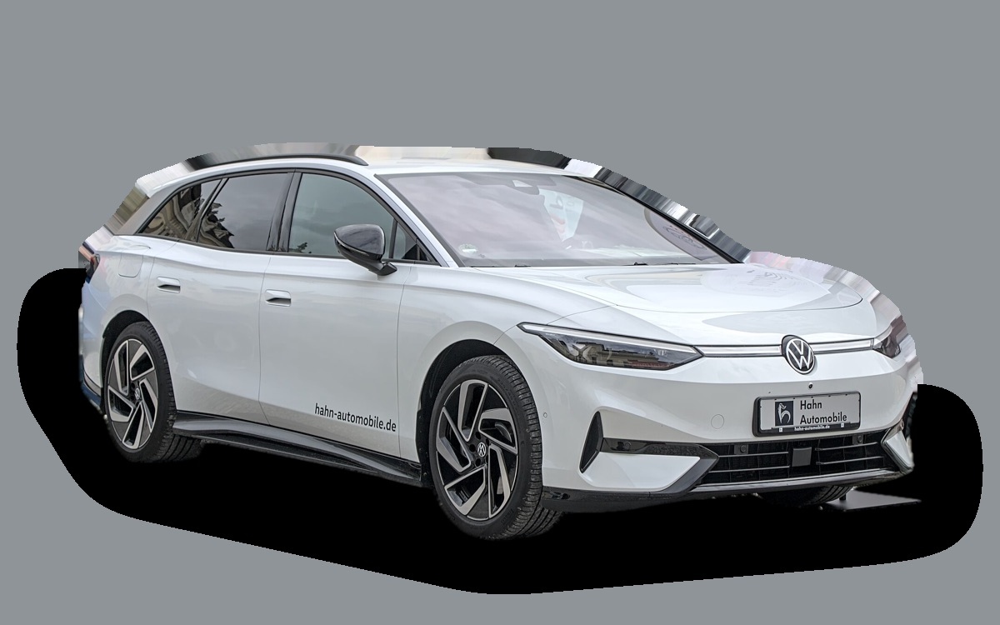
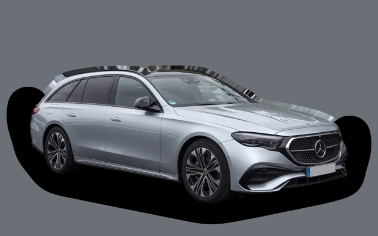

What does a Volkswagen ID.7 Tourer cost per month?
A 2026 Volkswagen ID.7 Tourer costs about SEK 6,626 a month, all in.


Monthly cost by model year
| Model year | Version in the calculation | Price | Per month | Grade |
|---|---|---|---|---|
| 2026 | Pro 77 kWh, Business | SEK 656,500 | SEK 6,626 | D |
Based on 5 years of ownership and 12,500 km a year, with fuel prices from 2026-10-22. The monthly cost includes depreciation, fuel, servicing and repairs, insurance and road tax.
How the cost splits for a 2026 car
- Depreciation: SEK 5,189/mo
- Fuel: SEK 390/mo
- Servicing and repairs: SEK 257/mo
- Insurance: SEK 761/mo
- Road tax: SEK 30/mo
Lease or buy new?
Volkswagen Privatleasing offers the ID.7 Tourer Pro S SWE Edition from SEK 6,495 a month for 36 months and 10,000 km a year. Here is what that costs compared with buying the same car new for SEK 670,300 and selling it after 36 months, at 12,500 km a year and 5 percent interest.
Leasing is cheaper SEK 2,350 less a month, SEK 84,600 over 36 months.
| Per month | Lease | Buy |
|---|---|---|
| Lease payment, 12,500 km a year | SEK 6,788 | – |
| Set-up and invoice fees | SEK 73 | – |
| Depreciation | – | SEK 6,697 |
| Interest on the money, 5% | – | SEK 2,291 |
| Servicing and repairs | included | SEK 223 |
| Fuel | SEK 393 | SEK 393 |
| Insurance | SEK 815 | SEK 815 |
| Road tax | SEK 30 | SEK 30 |
| Total per month | SEK 8,098 | SEK 10,448 |
| Total over 36 months | SEK 291,528 | SEK 376,128 |
You drive 2,500 km more per year than the offer assumes. The brand's price for the extra distance: SEK 292 a month. Volkswagen Privatleasing: ID.7 Tourer Pro S SWE Edition, 36 months, 10,000 km a year, servicing included, variable payment that follows interest rates. Set-up fee SEK 495 and invoice fee SEK 59 a month. Source: privatleasing.volkswagen.se, read on 26 October 2026, valid until 31 October 2026.
Buying: SEK 670,300 for a new car in the same version, and SEK 429,217 back when you sell it after 3 years. The residual value is based on ad prices for 3-year-old cars, adjusted because you drive 37,500 km in 3 years instead of the typical 57,000 km. The interest is what the money costs: interest on a car loan, or the interest you miss on savings. Fuel, insurance and tax are the same either way. Excess mileage and abnormal wear are charged when you hand back a leased car, and trading in a car you own at a dealer usually gets you less than the ad price.
Calculate with your own distance and interest · All lease cars compared
Used prices in ads
| Model year | Median price | Ads | Typical mileage |
|---|---|---|---|
| 2026 | SEK 611,900 | 17 | 12,000 km |
| 2025 | SEK 549,000 | 89 | 32,000 km |
| 2024 | SEK 529,500 | 10 | 41,000 km |
The median price in Swedish ads by model year in October 2026 (source: Blocket, AutoUncle). Ad prices are asking prices, and the final price may be lower.
Engines and versions
| Engine | Fuel | Power | 0–100 km/h | Consumption (WLTP) | Range | Model years | Extra cost |
|---|---|---|---|---|---|---|---|
| Pro 77 kWh | Electric | 286 hp | 6.7 s | 15.3 kWh/100 km | 606 km | 2024– | – |
| Pro S 86 kWh | Electric | 286 hp | 6.7 s | 15.5 kWh/100 km | 685 km | 2024– | +SEK 14,100 |
| GTX 4MOTION | Electric | 340 hp | 5.4 s | 16.9 kWh/100 km | 580 km | 2024– | +SEK 50,100 |
- Trim: Business, Style (+SEK 40,000)
Facts
- Body
- Estate
- Model years
- 2024–
- New from
- SEK 656,500
- Boot
- 605 litres
- Euro NCAP
- 5 of 5 stars
- New-car warranty
- 3 years
- Reliability
- 3 of 5
- Comprehensive insurance, estimate
- SEK 10,300/yr
- Servicing, estimate
- SEK 2,600/yr
Pros and cons
Pro
Largest boot among the electric estates, and long range.
Con
High purchase price.
Similar cars
 Volkswagen PassatSEK 6,777/mo as a 2026 model
Volkswagen PassatSEK 6,777/mo as a 2026 model
Mercedes-Benz E-Class EstateSEK 6,989/mo as a 2026 model Mercedes-Benz E-Class Estate W213SEK 5,654/mo as a 2020 model
Mercedes-Benz E-Class Estate W213SEK 5,654/mo as a 2020 model Skoda Superb EstateSEK 5,585/mo as a 2026 model
Skoda Superb EstateSEK 5,585/mo as a 2026 model Audi A6 AvantSEK 5,161/mo as a 2023 model
Audi A6 AvantSEK 5,161/mo as a 2023 model BMW 5 Series TouringSEK 4,954/mo as a 2020 model
BMW 5 Series TouringSEK 4,954/mo as a 2020 model
Updated 2026-10-29 · ad data Oct 2026